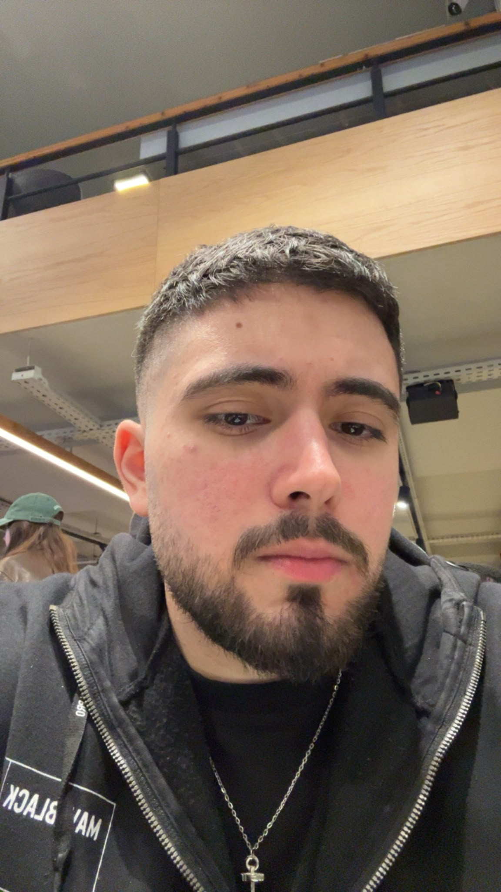
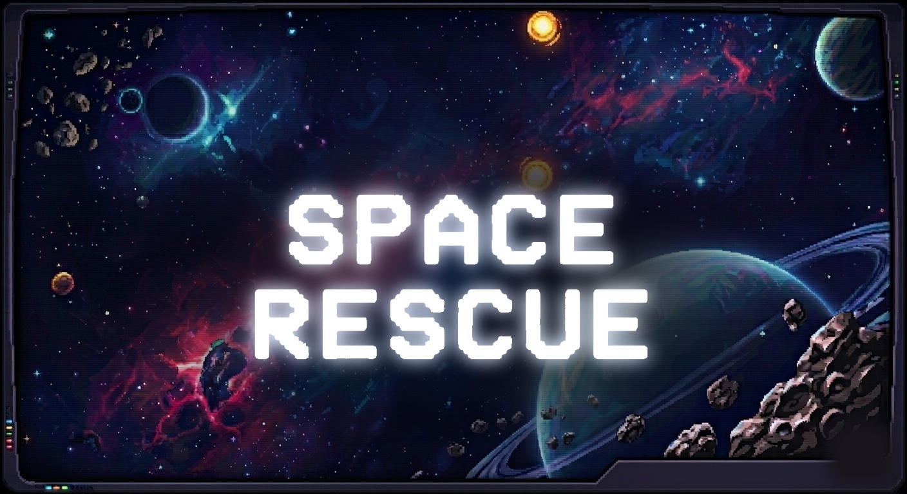
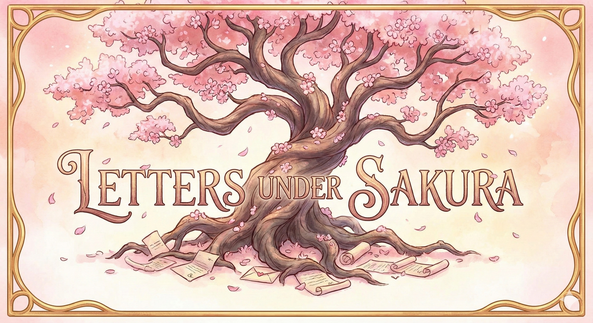
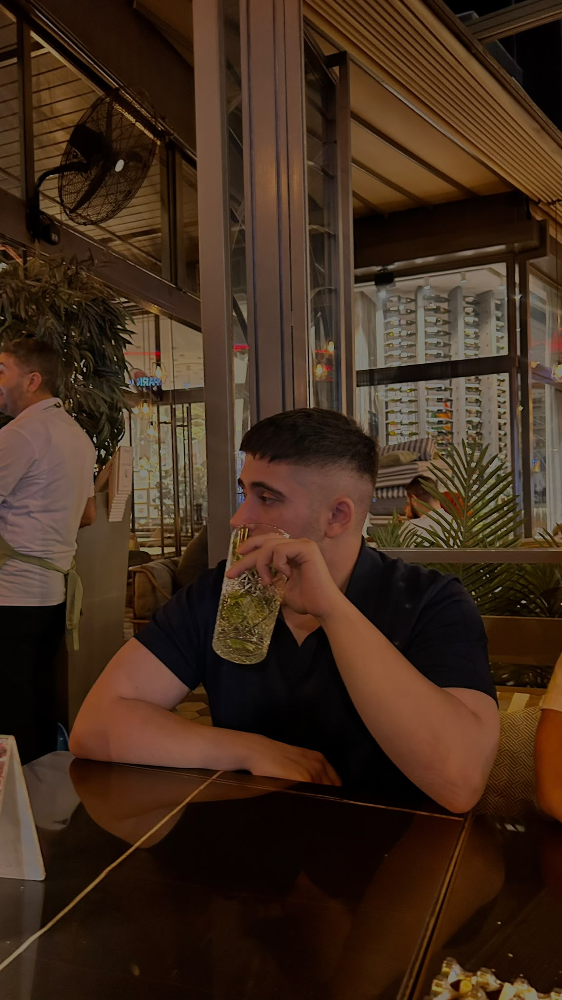

Systems & Economy Design
Win/lose structures, resource loops, and difficulty curves tuned segment by segment — not by feel, by stated intent.
Open for internship & junior roles
Game Designer focused on Systems & Mechanics. I design the win/lose structures and economies, and balance the difficulty curve until a game feels intentional — then carry that into a working build.
2
Shipped games
3
Full GDDs written
Sr.
Digital Game Design, Beykoz

What I do
Win/lose structures, resource loops, and difficulty curves tuned segment by segment — not by feel, by stated intent.
Tuning existing levels segment by segment — enemy mix, timing, and threat escalation built around a stated intent per wave, not by feel.
Relationship-flag systems, branching structure, and full design documents written to be actually built from.
Portfolio

Game Designer & Developer — co-dev: Eren Acar, co-design: Ömer Efe Ölmez
A 39-page GDD documenting a fully hand-tuned encounter economy: 7 common enemies, 6 elites, 4 mini-bosses and 1 main boss, placed across 3 levels × 3 phases × 10 segments — every wave built around a stated design intent, not randomness.

Solo Designer, Writer & Developer
A solo-written psychological horror visual novel built around a paper-reconstruction mini-game and a lightweight per-character relationship-flag system that decides which student lives and which one doesn't.

About me
I'm a game designer working across systems, mechanics and narrative structure — solo and in small teams. My focus is on documenting a game end-to-end (full GDDs: core loop, mechanics, encounter/segment balancing tables) and then carrying that document into a working, playable build.
I've shipped a solo psychological-horror visual novel and co-designed a bullet-hell shooter with a fully hand-tuned encounter economy across 3 levels. Currently a senior Digital Game Design student at Beykoz University.
Stack & tools
Questions
Both. Letters Under Sakura is solo end-to-end; Space Rescue is a small team project where I co-designed the systems and encounter economy.
Unity for prototyping, systems design and encounter balancing, and Ren'Py for narrative-driven games. On Space Rescue — a team project — the levels themselves and the networking/Steamworks integration were handled by my co-developer; my focus was tuning the encounter economy across them.
Yes — the Letters Under Sakura GDD is linked under its case study above, and more are available on request.
Finishing a Digital Game Design degree at Beykoz University — open to internship and junior design opportunities.
Get in touch
Open to internship and junior design roles, short or long-term. If a systems or balancing brief needs a second pair of eyes, let's talk.
Quick facts